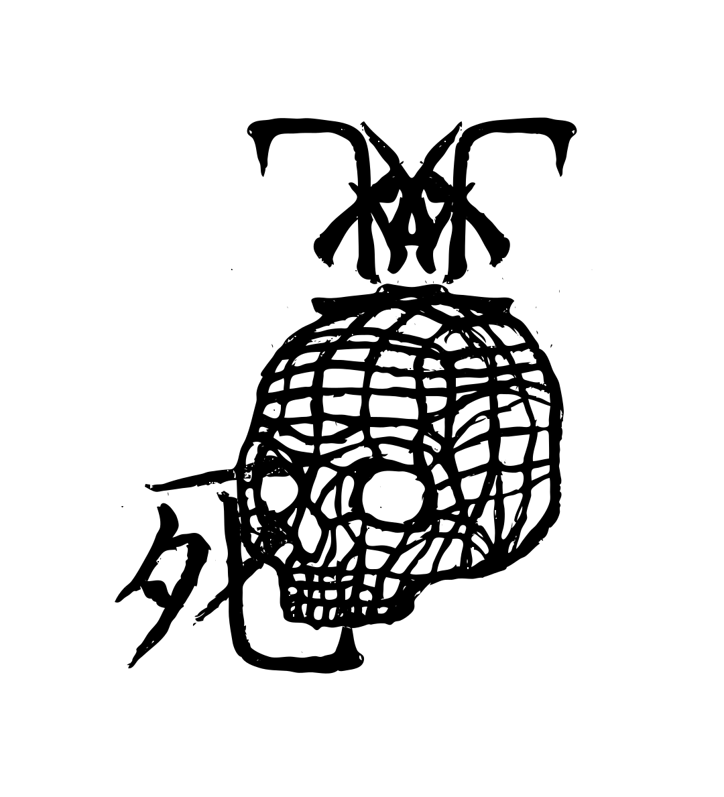

Матрица Апокалипсиса
Чтобы положить конец распространению такого аномального животного, как человек, хороши все средства, и люди все больше ощущают необходимость и потребность заменить естественные бедствия еще более эффективными искусственными.
Идея Светопреставления носится в воздухе.
Чуть выйдешь на улицу, посмотришь, поговоришь, послушаешь – и сразу поймешь, что час близок, пусть даже до него осталось еще сто или тысяча лет.
Тень близкой развязки придает своеобразный пафос самым обыденным делам, самым банальным зрелищам, самым глупым случайностям.
Чтобы не заметить этого, надо упорно отворачиваться от Неизбежного.
